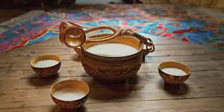
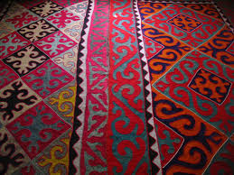
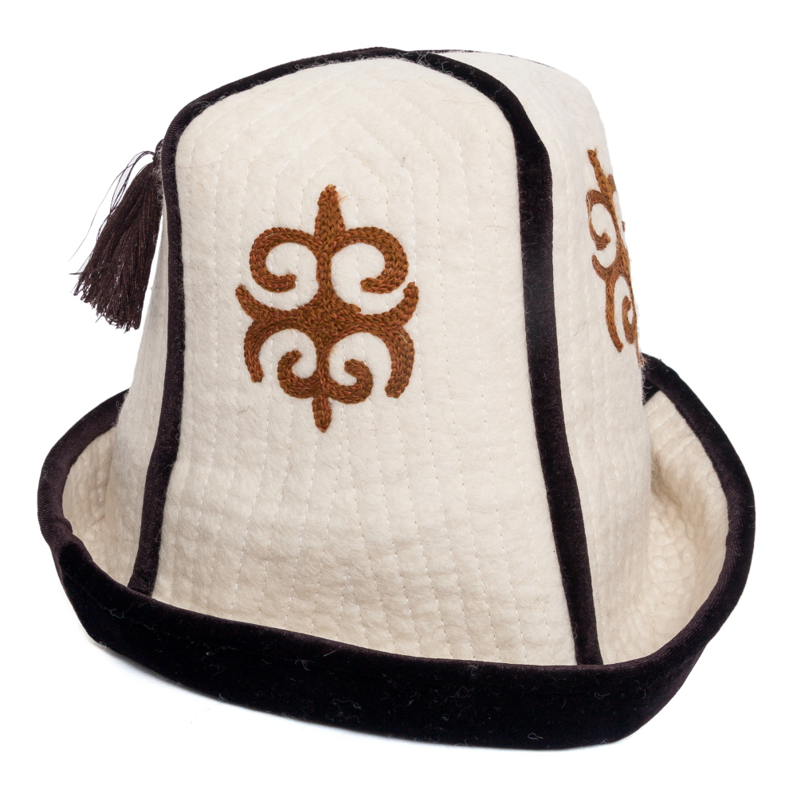
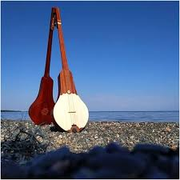

Кыргыз салттары
Атадан балага өткөн байыркы каада-салттар

Боз үй
1. Боз үйдүн негизги бөлүктөрү (Түзүлүшү) Боз үй негизинен эки чоң бөлүктөн турат: жыгач уук-керегелери (сөөгү) жана кийиз жабуулары. Аларды бириктирип туруу үчүн түрдүү боолор, тизгичтер колдонулат. Жыгачтан жасалган бөлүктөрү: Кереге — боз үйдүн дубалы. Ал бири-бирине кайчылаштырылып, тери тасмалар (көк) менен бекитилген торчо жыгачтардан турат. Керегелердин санына жараша боз үй чоң же кичине болот (мисалы: 4 канат, 5 канат, 6 канат же андан көп). Уук — боз үйдүн куполун (чатырын) түзүүчү ичке, узун жыгачтар. Төмөнкү жагы керегенин башына байланат, ал эми жогорку учтуу жагы түндүктүн көзүнө сайылат. Түндүк — боз үйдүн эң чокусу, тегерек жыгач алкак. Ал күн нурунун киришин жана түтүндүн чыгышын камсыз кылат. Түндүк — үй-бүлөнүн, мамлекеттин (туубуздагыдай) жана тукумдун символу. Каалга (Босого-тал) — боз үйдүн жыгач эшиги. Кийизден жасалган жабуулары: Туурдук — керегени (дубалды) тегерете сыртынан жабуучу кийиз. Үзүк — ууктардын үстүнөн (чатырына) жабылуучу эки чоң трапеция формасындагы кийиз. Түндүк жабуу (Түндүк маinternal) — түндүктүн үстүн жаап, аба ырайына жараша ачылып-жабылып туруучу төрт бурчтуу кийиз. Чий — кереге менен туурдуктун ортосуна чийден согулуп, түрдүү оймо-чиймелер менен кооздолгон тосмо. Ал шамалдан коргоп, кооздук берет. 2. Боз үйдүн ички жасалгасы жана бөлүнүшү Боз үйдүн ичи өзүнчө бир тартип менен бир нече зонага бөлүнөт. Эшиктен киргенде ар бир орундун өз мааниси бар: Төр — эшикке карама-каршы жайгашкан, үйдүн эң сыйлуу бөлүгү. Бул жерге калың төшөктөр салынып, сыйлуу коноктор, үйдүн аксакалдары отурат. Төрдүн аркасында жүк (сандыктардын үстүнө жыйылган төшөк, жууркан-көпчүктөр) турат. Эр жагы (Оң тарап) — эшиктен киргендеги сол кол тарап (төрдөн караганда оң тарап). Бул эркектердин тарабы деп эсептелет. Бул жерге ат жабдыктары, курал-жарактар, мергенчилик шаймандары коюлат. Аял жагы (Сол тарап) — эшиктен киргендеги оң кол тарап. Бул аялдардын, үй кожойкесинин тарабы. Бул жерде тамак-аш, идиш-аяк сакталган чийүүчү шкаф (аяк кап) жайгашат. Коломто — үйдүн так ортосу. Бул жерге от жагылып, тамак бышырылган. Коломто — үйдүн куту жана жылуулугу. 3. Боз үйдүн уникалдуулугу жана артыкчылыктары Боз үй — инженердик деңгээлде абдан так эсептелген, табигый кондиционер десек болот. Анын негизги өзгөчөлүктөрү: Мобилдүүлүк: Боз үйдү 1-2 сааттын ичинде эле чечип, төөгө же атка жүктөп, башка жайга көчүп кетүүгө болот. Ошондой эле бат эле кайра тигилет. Климаттык ыңгайлуулук: Жайында ичи салкын, ал эми кышында жылуу болот. Кийиз сууну өткөрбөйт, бирок абаны жакшы алмаштырат. Сейсмотуруктуулук: Жыгачтары бири-бирине катуу бекитилбестен, ийкемдүү байланышкандыктан, боз үй эң катуу жер титирөөгө да туруктуу келет. Ал кулап кетпейт, болгону бир аз чайпалып турат.
Көбүрөөк →
Кымыз
Бээ сүтүнөн жасалган улуттук ичимдик. Ал саламаттыкка пайдалуу жана жайкы ысыкта сергитет.
Көбүрөөк →
Ат оюндары
Көк бөрү, эңиш, кыз куумай — булардын баары кыргыздардын сүйүктүү ат оюндары.
Көбүрөөк →
Шырдак
Кол өнөрчүлүктүн бир түрү — шырдак. Кийизден жасалган бул буюм боз үйдү жасалгалайт.
Көбүрөөк →
Ак калпак
ССЮЮЮЮДААААА
Көбүрөөк →
Комуз
Үч кылдуу улуттук музыкалык аспап. Комузда кыргыздын жан дүйнөсү чагылдырылат.
Көбүрөөк →